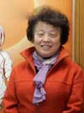

| |
|
|
吴凤岗教授
《育婴员国家职业标准》编写、审定成员、《育婴员国家职业资格培训教程》编审委员会副主任；
中国家庭教育学会常务理事、中国优生优育协会理事、中华育婴工程专家组专家、中华儿童文化艺术促进会专家委员、中国科普作家协会会员、中国心理学会理事、著名儿童心理学专家。
主要代表著作有：《谈谈儿童心理的发展》、《儿童智慧教育》、《怎样培养孩子的聪明才智》、《怎样做爸爸》、《儿童道德情感的培养》等。
|
| |
|
|
王占郡教授
资深讲师，旅美学者；
中国早期教育宣讲团专家；
平衡式家庭研究中心主任，平衡式家庭教育法创始人，
著作有: 《让孩子拥有最快乐的一生—— 一个父亲的平衡教育实践》、《父母皆祸害？——豆瓣网“父母皆祸害”小组深度揭秘》。
主张用平衡教育的手段，最求孩子快乐的最大化.
|
| |
|

|
王书荃教授
《育婴员国家职业标准》编写、审定成员、《育婴员国家职业资格培训教程》编写委员会主编、育婴师国家考试题库编写成员、国家育婴师职业培训专家、中华育婴工程专家组专家、中央教育科学研究所研究员、中国医学心理学会北京儿童心理卫生专业委员会委员、中国教育学会儿童教育心理研究分会副理事长、北京社会学会弱智与自闭症儿童教育与康复研究分会副秘书长；现担任北京金童职业技能培训学校名誉校长。主要代表著作有：《心理辅导活动指南》、《儿童的情绪与行为》、《婴幼儿的智力发展与潜能开发、《韦氏儿童智力量表的理论与应用》等。
|
| |
|
|
郭建国教授
《育婴员国家职业标准》编写、审定成员、《育婴员国家职业资格培训教程》编写委员会主编、育婴师国家考试题库编写成员、中华育婴工程专家组专家、国家育婴师职业培训首席教授。中国关心下一代体育健康基金会专家委员会委员、中国儿童基金会教育专家委员会专家、全国妇联心系新生命“种子工程”专家委员会专家。
主要代表著作有：《三岁前育儿手册》、《e宝贝亲子健身操》、《科学育儿-新妈妈实操手册》等。
培训主讲课题：婴幼儿大运动的发展与训练
|
| |
|
|
夏秀英教授
中国关心下一代委员会事业发展中心专家，从事幼儿教育工作近30年。高级教师，曾连续10年获得北京市级“优秀园丁”称号，参与编写了亲子园和幼儿园课程，0 — 6 岁婴幼儿跟踪测评指导近千人，在婴幼儿教育领域和育婴师培训具有丰富的实操经验。
|
| |
|
|
罗爱东教授
原北京市幸福泉幼儿园资深高级教师，现任某幼儿园园长，具有丰富的亲子教学和奥尔夫教学经验。
|
| |
|
|
梅健教授
中国心理学会常务副秘书长
中国心理学会心理学普及工作委员会主任
中国优生科学协会常务理事
中国儿童中心研究员。
主要代表著作：
《“3.3.3”研究体系对儿童学习能力和智力发展影响的研究》
《剖腹产孩子的养和育》
《冲破儿童学习困境行动指南》
《中国湖区儿童教育影响因素的分析、调查、与干预效果的五年纵向观察与评价研究》
《0-3岁婴幼儿养育全方案》
《儿童体格发育与营养评价—WHO 2005儿童生长发育新标准》
|
| |
|
|
位姰覃教授
北京大学心理学硕士，高级教师职称；
国家心理咨询师，中国心理学会全国会员；
育婴师国家职业技能鉴定考评员；
中国关心下一代联盟专家委员会专家；
中国医学与心理工作者协会心理干预技术专业委员会委员。
|
| |
|
|
马紫月教授
国家二级心理咨询师;中国青少年儿童咨询中心咨询师；
中国心理卫生学会会员；北京心理卫生咨询活动中心咨询专家，
具有丰富的儿童心理咨询一线工作经验。
|
| |
|
|
马绪博士
国家二级心理咨询师
高级催眠保健师
珠海市心理协会秘书长；
珠海市阳光心理咨询中心主任；
珠海市家庭教育研究会理事
|
| |